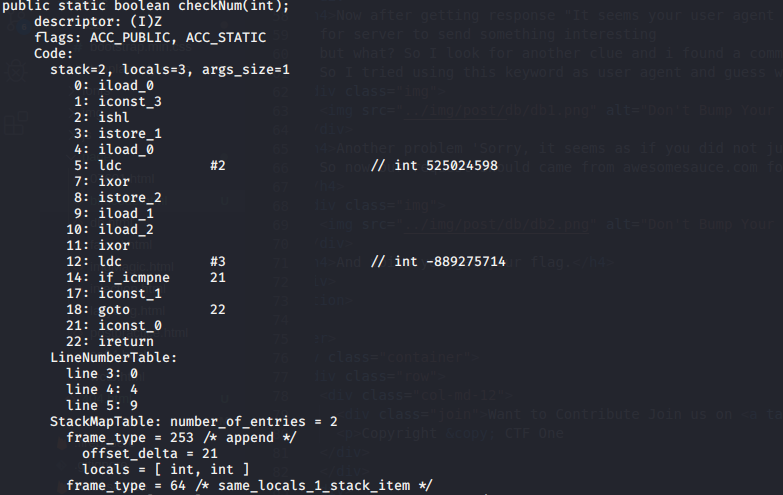

As the question gives us a mega link, after downloading the content we get a file called bitecode.txt which
contain some java byte code for understand this you should have a little understanding of java byte code. Now moving along we explain the syntax.

As shown there are some instruction listed from 0 to 22, so starting from 0 iload_0 will load the local variable into stack, iconst_3 will load constant 3 into stack
and ishl will pop 3 values from stack and left shift value1, value2 number of times. So local variable is left shift 3 times and push back to stackistore_1 will load the top most value from stack and store the value into argument stack as first argument
For another instruction iload_0 do as mention above ldc will push value from constant pool to stack which is 525024598 in this case
, ixor will pop the two value and push the resultant value of xor into stack, istore_2 do the same as above but as second argument
iload_1 and iload_2 will load the value from argument stack and push them to stack and ixor
will xor those value and push back the result
Now ldc again push -889275714 this value. if_cmpne check for two value equality if equal then execute next else goto statement 21
So in summary we have to find the value for which this instruction is valid
(value << 3) ^ (value ^ 525024598) == -889275714
For solution we take help of xor as a ^ b = c so b ^ c = a i.e
(value << 3) ^ value = 525024598 ^ -889275714
For negative value we use 2's compliment so we get
(value << 3) ^ value = 3585443816
Now we convert this value to binary and try to find the value of given number as (value << 3) last 3 digit will be 000 so xor with given value last
three digit will give last three digit of actual value now this value is added to shifted value before 000 and again xor with given value will give us next three digit.
Such that we get full value, now we take 2's compliment again and convert it into decimal to get our flag.